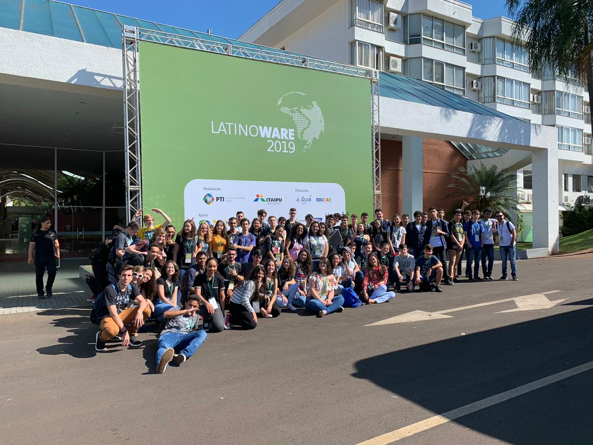

Técnico em Informática
Conhecendo um pouco sobre o curso
O que é um Técnico em Informática faz?
O Técnico em Informática é um profissional com competências para manipular computadores e sistemas operacionais, desenvolver sistemas computacionais que auxiliem na rotina de trabalho das organizações; realizar manutenções em sistemas; conceber e implementar soluções de software baseadas em banco de dados; conhecer e aprender a aplicar as novas tendências tecnológicas para solução de problemas; desenvolver aplicações e sites para Internet; elaborar e documentar projetos de software; entender o funcionamento e solucionar problemas de Hardware e Software; identificar e entender o funcionamento de tecnologias empregadas nas redes de computadores; integrar-se com facilidade a grupos de trabalho.

Perspectivas profissionais
O setor de Tecnologia da Informação e Comunicação vem crescendo no Brasil. Foz do Iguaçu acompanha essa tendência, com grandes oportunidades para quem atua no desenvolvimento de sistemas, software e aplicativos. O IFPR Campus Foz do Iguaçu aumenta esse potencial ao estabelecer parcerias com diversas instituições, com destaque para o Parque Tecnológico Itaipu.

Informações sobre o curso
- Forma de Oferta: Integrado
- Requisito: Ensino Fundamental Completo
- Acesso: Processo Seletivo
- Duração: 4 anos
-
Período:
- Matutino: Aulas pela manhã (7h30 às 11h50) e contraturno à tarde (13h20 às 17h50)
- Vespertino: Aulas à tarde (13h20 às 17h50) e contraturno pela manhã (7h30 às 11h50)
- Cordenador(a): Marcela Turim Koschevic
Documentos sobre o curso
IFPR - Instituto Federal do Parana - Todos os direitos reservados